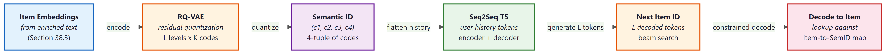

"The fastest retrieval index is the one you do not need, because the next item is something the model can simply utter."
Pixel, Curious Librarian Agent
Entry point (D) is the most radical of the four. Sections 38.2 through 38.4 augmented a classical pipeline with LLMs. Generative recsys replaces a major chunk of that pipeline. Instead of a candidate generator that retrieves from a fixed embedding index, a sequence-to-sequence model generates the next item directly as a sequence of learned tokens. The tokens are not item IDs; they are semantic IDs, positions in a learned hierarchical codebook. The TIGER, LLaRA, and P5 papers each instantiate this idea differently. This section walks through the semantic-ID intuition, the three reference architectures, and the surprising parallel to residual vector quantization in audio neural codecs.
Prerequisites
This section assumes the reader has finished Section 38.1 (LLM entry points into recsys) and is comfortable with the autoregressive sequence-to-sequence training pattern from Chapter 3. Familiarity with residual vector quantization (RVQ) from the audio-codec discussion in Section 20.0.2 sharpens the semantic-ID analogy.
38.5.1 The Paradigm Shift
A classical recsys decomposes the catalog into a set of discrete item IDs (item_42, item_8137) and retrieves from an index over those IDs. The model never generates an item; it scores items and ranks them. Generative recsys collapses scoring and retrieval into a single act: a transformer reads the user's history (encoded as a sequence of item tokens) and produces the next item token. The catalog is no longer an external index; it is the model's vocabulary.
The naive version of this idea is to treat each item as its own vocabulary token. A catalog of one million items becomes a vocabulary of one million tokens. The naive version does not work. The vocabulary is too large for the softmax to learn well, every cold-start item has zero training data, and the embeddings of similar items are unrelated because each item is its own atomic symbol.
The fix is the semantic-ID idea, due to TIGER (Rajput et al. 2023). Each item is mapped to a short sequence of codebook tokens drawn from a much smaller learned codebook. Similar items share token prefixes. A catalog of one million items uses, say, four codebook positions of 256 tokens each, for a vocabulary of just 1024 tokens that can address $256^4 \approx 4.3 \times 10^9$ distinct items. The softmax is small. Cold-start items can borrow training signal from their semantic neighbors that share token prefixes. And the model can generate a new item ID one token at a time, never having to enumerate the catalog.
38.5.2 Semantic IDs from RQ-VAE
The semantic IDs are produced by an RQ-VAE (Residual Quantized Variational Autoencoder). Given an item embedding (computed from the enriched text of Section 38.3, for example), the RQ-VAE quantizes it through a sequence of codebooks. The first codebook captures the coarsest distinction; the second codebook quantizes the residual that the first one missed; the third codebook quantizes the residual of that; and so on. The output is a tuple of integer indices, one per codebook level, which becomes the item's semantic ID.
The mathematics is short. Given an embedding $x \in \mathbb{R}^d$ and a codebook $C_1 \in \mathbb{R}^{K \times d}$, the first level chooses $i_1 = \arg\min_i \|x - C_1[i]\|^2$, then computes the residual $r_1 = x - C_1[i_1]$. The second level repeats with codebook $C_2$ on $r_1$ to get $i_2$ and $r_2$. After $L$ levels, the semantic ID is the tuple $(i_1, i_2, \ldots, i_L)$, and the reconstructed embedding is $\hat{x} = \sum_{\ell=1}^L C_\ell[i_\ell]$. Training the codebooks jointly with the (item-embedding) reconstruction loss yields codebooks whose early levels capture coarse semantic structure and whose late levels capture fine distinctions.
The audio codec parallel. The RQ-VAE used by TIGER is the same residual vector quantization (RVQ) scheme that drives neural audio codecs like SoundStream and EnCodec, covered in Chapter 20 (Section 20.0.2). In audio, the input embedding is a spectrogram patch and the semantic ID describes a sound; in recsys, the input is a product embedding and the semantic ID describes an item. The hierarchical-codebook trick is identical. The parallel is a useful one to keep in mind when reading either literature.
38.5.3 TIGER: Transformer Index for Generative Recommenders
TIGER (Rajput et al. 2023) is the canonical generative recsys paper. The pipeline has three stages. Stage 1 trains an RQ-VAE on item embeddings (computed from item content) to produce semantic IDs of length $L$, where each token is drawn from a codebook of size $K$ (typical values are $L = 4$, $K = 256$). Stage 2 converts each user history into a sequence of semantic IDs: a user who interacted with items $[a, b, c]$ becomes the token sequence $[a_1, a_2, a_3, a_4, b_1, b_2, b_3, b_4, c_1, c_2, c_3, c_4]$. Stage 3 trains a small transformer (encoder-decoder, T5-style) to map the user-history token sequence to the next item's $L$ semantic-ID tokens.
At inference time, the model decodes $L$ tokens with beam search. The decoded tokens are looked up against the item-to-semantic-ID map to retrieve the recommended items. The beam-search step can return any item in the catalog, including ones that have never appeared in any user history (the model never had to enumerate the catalog because the catalog lives in its vocabulary). Figure 38.5.2 shows the full TIGER pipeline from item embeddings through to a decoded item.

# Sketch of a TIGER training pipeline. Real code uses a properly tuned T5 stack
# and an RQ-VAE implementation; this is the high-level shape.
import torch, torch.nn as nn
from transformers import T5ForConditionalGeneration, T5Config
# --- Stage 1: RQ-VAE produces semantic IDs from item embeddings ---
class RQVAE(nn.Module):
def __init__(self, dim: int, levels: int, codes_per_level: int):
super().__init__()
self.codebooks = nn.ParameterList([
nn.Parameter(torch.randn(codes_per_level, dim) * 0.01)
for _ in range(levels)
])
def quantize(self, x: torch.Tensor) -> tuple[list[int], torch.Tensor]:
ids, residual = [], x
for cb in self.codebooks:
d2 = ((residual.unsqueeze(1) - cb.unsqueeze(0)) ** 2).sum(-1)
i = d2.argmin(dim=-1)
ids.append(i)
residual = residual - cb[i]
return torch.stack(ids, dim=-1), residual # (B, L), residual
def reconstruct(self, ids: torch.Tensor) -> torch.Tensor:
return sum(self.codebooks[l][ids[..., l]] for l in range(len(self.codebooks)))
# --- Stage 2: convert each user history to a token sequence ---
def user_history_to_tokens(history_item_ids: list[int],
item2semantic: dict[int, tuple[int, ...]],
level_offset: list[int]) -> list[int]:
"""Each level uses a disjoint token-id range so the T5 vocab is one stream."""
out = []
for item_id in history_item_ids:
for level, code in enumerate(item2semantic[item_id]):
out.append(level_offset[level] + code)
return out
# --- Stage 3: train a small T5 to predict the next item's L semantic tokens ---
cfg = T5Config(vocab_size=4 * 256 + 8, # L=4 codebooks of K=256 + special tokens
d_model=256, num_layers=6, num_decoder_layers=6,
num_heads=8, d_ff=1024)
model = T5ForConditionalGeneration(cfg)
# Training step: given encoder input = user history tokens,
# decoder target = next item's L semantic tokens.
def train_step(batch, optim):
out = model(input_ids=batch["history"], labels=batch["next_item_tokens"])
out.loss.backward()
optim.step(); optim.zero_grad()
return out.loss.item()
Code Fragment 38.5.1a: Sketch of a TIGER training pipeline. The RQ-VAE quantizes item embeddings into 4-token semantic IDs; user histories are flattened into token sequences with disjoint per-level offsets so the T5 vocabulary is one stream; the T5 is trained sequence-to-sequence to emit the next item's 4 tokens given the user history. The semantic-ID map is computed once and cached.
A streaming platform has 1{,}048{,}576 movies. The team trains an RQ-VAE with $L = 4$ codebook positions and $K = 256$ entries per codebook. The total addressable code space is $K^L = 256^4 = 4{,}294{,}967{,}296$, four thousand times the catalog, so collisions are negligible. The T5 vocabulary used for item tokens is $L \cdot K = 1024$, well within a comfortable softmax. Concretely, "Inception (2010)" has item embedding $x_{\text{Inc}} \in \mathbb{R}^{256}$ from the enriched-text pipeline of Section 38.3. Level 1 picks the nearest of 256 vectors in $C_1$ and emits $i_1 = 12$ (the "high-budget sci-fi" cluster); the residual $r_1 = x_{\text{Inc}} - C_1[12]$ flows to level 2 which emits $i_2 = 47$ (the "Nolan / non-linear narrative" cluster); level 3 emits $i_3 = 193$ (the "dream-logic / heist" cluster); level 4 emits $i_4 = 8$ (a unique tag within the cluster). The semantic ID is $(12, 47, 193, 8)$. After applying the per-level offsets $0, 256, 512, 768$ used by the T5 vocab, the token sequence the LLM sees is [12, 303, 705, 776]. "Interstellar (2014)" sits in the same Nolan cluster and shares the first two tokens [12, 303, ...], so a model that learns to recommend Inception after a Nolan-heavy history gets free transfer to recommending Interstellar even if the latter has never appeared in any training user's history.
38.5.4 LLaRA: Aligning Collaborative Embeddings with LLM Tokens
LLaRA (Liao et al. 2024) takes a hybrid approach. Instead of training a from-scratch transformer over semantic IDs (TIGER), LLaRA fine-tunes a frozen pre-trained LLM to do recommendation, but injects collaborative-filtering signal through a small projector. Each item has two representations: a textual one (the item title plus an LLM-enriched description, as in Section 38.3) and a collaborative-filtering one (a vector from a SASRec or matrix-factorization model trained on click data). The projector is a tiny MLP that maps the CF vector into the LLM's token embedding space, so the LLM's input sequence becomes [CF_token, text_token_1, text_token_2, ...] for each item.
The LLM is then prompt-tuned on user histories ("a user watched: [item A] [item B] [item C]; recommend the next item") with the projector trained jointly to minimize the recommendation loss. The result is a model that has both the textual reasoning the LLM brings and the click-pattern signal that classical CF brings, fused at the token level. LLaRA reports gains over both pure-text and pure-CF baselines on standard benchmarks, especially in the cold-start regime where neither baseline alone is strong. Figure 38.5.3 shows the LLaRA architecture: a CF embedding from a frozen SASRec model passes through a small MLP projector into the LLM token-embedding space, and the resulting CF token is concatenated with text tokens for each item in the user history.
Formally, write the user's history as a sequence of items $h = (i_1, i_2, \ldots, i_T)$. For each item $i_t$, the model concatenates a CF token and a sequence of text tokens:
$$ z_t = P(e_{i_t}), \qquad x_t = [\,z_t,\; \mathrm{embed}(\mathrm{tok}(\mathrm{title}_{i_t}))\,] , $$
where $P : \mathbb{R}^{d_{\mathrm{cf}}} \to \mathbb{R}^{d_{\mathrm{llm}}}$ is the projector and $e_{i_t}$ is the SASRec embedding for item $i_t$. The full LLM input is the concatenation $[x_1, x_2, \ldots, x_T, \mathrm{prompt}]$, and the training loss is the standard next-item cross-entropy plus an alignment term that pulls the projected CF token towards the average embedding of the item's text tokens:
$$ \mathcal{L} = -\log P_{\theta}(i_{T+1} \mid x_{1:T}, \mathrm{prompt}) \;+\; \lambda \, \bigl\| z_t - \overline{\mathrm{embed}(\mathrm{tok}(\mathrm{title}_{i_t}))} \bigr\|^2 . $$
The first term tunes the LLM (and LoRA adapters) to predict the held-out next item; the alignment term keeps the CF token from drifting to a region of embedding space the LLM cannot read. The LLM weights are usually frozen except for LoRA adapters; only the projector $P$ and the adapters are updated.
# Sketch of a LLaRA training step. Real code uses a properly tuned LLaMA stack
# and PEFT LoRA adapters; this is the high-level shape.
import torch, torch.nn as nn
from transformers import AutoModelForCausalLM, AutoTokenizer
class Projector(nn.Module):
def __init__(self, d_cf: int, d_llm: int, hidden: int = 1024):
super().__init__()
self.net = nn.Sequential(
nn.Linear(d_cf, hidden), nn.GELU(), nn.Linear(hidden, d_llm)
)
def forward(self, e_cf): # (B, T, d_cf) -> (B, T, d_llm)
return self.net(e_cf)
llm = AutoModelForCausalLM.from_pretrained("meta-llama/Llama-3-8B")
tok = AutoTokenizer.from_pretrained("meta-llama/Llama-3-8B")
proj = Projector(d_cf=64, d_llm=llm.config.hidden_size)
def llara_step(history_cf, history_titles, target_item_ids, optim, lam=0.1):
# history_cf: (B, T, d_cf) frozen SASRec vectors; history_titles: list[list[str]]
cf_tokens = proj(history_cf) # (B, T, d_llm)
# Build per-item interleaving: [cf_token, text_tokens, cf_token, text_tokens, ...]
inputs_embeds, labels = build_interleaved(cf_tokens, history_titles, target_item_ids, tok, llm)
out = llm(inputs_embeds=inputs_embeds, labels=labels)
align = ((cf_tokens - text_mean_embeds(history_titles, tok, llm)) ** 2).mean()
loss = out.loss + lam * align
loss.backward(); optim.step(); optim.zero_grad()
return out.loss.item(), align.item()
Code Fragment 38.5.2b: Pseudocode of one LLaRA training step. A frozen CF tower produces history embeddings; the trainable projector maps each into the LLM's hidden-dim space; the interleaved sequence is fed to the LLM via inputs_embeds (not input_ids) so the CF tokens bypass the tokenizer; the loss is the standard next-token cross-entropy plus a small alignment term that keeps the CF tokens readable by the LLM.
A user watched three movies: Inception (2010), Interstellar (2014), and Tenet (2020). The frozen SASRec tower returns CF vectors $e_a, e_b, e_c \in \mathbb{R}^{64}$ with, say, $e_a = [0.21, -0.04, \ldots]$. The projector $P$ is a 2-layer MLP with hidden dim 1024 and output dim 4096 (LLaMA-3-8B hidden size), so it produces three CF tokens $z_a, z_b, z_c \in \mathbb{R}^{4096}$. Each movie title tokenizes to roughly 4 sub-word tokens (for example "Inception" tokenizes to ["In", "ception"], plus year and parenthesis). The LLM input is the embedding sequence $[z_a, t^{(a)}_1, t^{(a)}_2, t^{(a)}_3, t^{(a)}_4, z_b, t^{(b)}_1, \ldots, z_c, t^{(c)}_1, \ldots, p_1, p_2, \ldots]$ where the last block is the prompt "> recommend the next movie:". With $T=3$ and an average 5 tokens per item, the input length is $3 \cdot 6 + 12 \approx 30$ embeddings. The LLM then decodes a movie title (for example "Dunkirk (2017)"), which is looked up against the catalog. The alignment term keeps $z_a$ within a small ball around the mean text-embedding of "In ception ( 2010 )", so the LLM's attention layers can reason about Inception consistently whether it sees the CF token or the textual one.
TIGER trains a small transformer from scratch over semantic IDs; LLaRA fine-tunes a large pre-trained LLM with a projector. The tradeoffs are roughly inverse. TIGER is cheaper to train and to serve and is well-suited to catalogs with strong content signal. LLaRA is more expensive on both axes but inherits the LLM's world knowledge, which helps when the catalog is sparse (book recommendations on a new platform with no click history) or when textual reasoning is the dominant signal (long-form articles, code snippets).
38.5.5 P5: Unified Text-to-Text for Recsys
P5 (Geng et al. 2022) is the earliest of the three. It frames every recsys task (rating prediction, sequential recommendation, explanation generation, review summarization, top-k recommendation) as text-to-text in a T5-style format. A rating prediction prompt looks like "User_42 saw Movie_8137. Predict rating.", and the answer is the integer "4." A sequential-recsys prompt looks like "User_42 history: Movie_1, Movie_2, Movie_3. Next?", and the answer is "Movie_8137."
P5 used naive item IDs (Movie_8137 as a literal string token); the semantic-ID innovation of TIGER came later. But P5 established the multi-task text-to-text framing, which both TIGER and LLaRA inherited. The framing matters because it lets a single model handle the full recsys workload: rating, ranking, explanation, summarization, all in one shared parameter space. The shared-parameter setup transfers across tasks: training on review summarization improves top-k recommendation, because both tasks need the model to understand what makes items similar. Figure 38.5.4 shows how five distinct recsys tasks are flattened into the same input-output text format and routed through the same T5 backbone.
Every P5 task instance is a (prompt, target) text pair. The training objective is the standard sequence-to-sequence cross-entropy averaged uniformly over all tasks:
$$ \mathcal{L}_{\mathrm{P5}} = -\frac{1}{|\mathcal{D}|} \sum_{(x, y) \in \mathcal{D}} \sum_{j=1}^{|y|} \log P_{\theta}\bigl(y_j \mid y_{<j},\, x\bigr) , $$
where $x$ is the prompt (a templated string like "User_42 history: M1, M2, M3. Next?"), $y$ is the target text ("M8137", a digit, a free-text explanation, or a comma-separated top-k list), and $\mathcal{D}$ is the union of all task-specific training sets. Item IDs and user IDs are literal vocabulary tokens, so the embedding for Movie_8137 is a single learned vector. This is what limits P5 on cold-start items and motivated the semantic-ID idea of TIGER.
# Sketch of a P5 multi-task batch. Real code uses the full P5 prompt template
# library and the T5-base tokenizer; this is the high-level shape.
from transformers import T5ForConditionalGeneration, T5Tokenizer
tok = T5Tokenizer.from_pretrained("t5-base")
model = T5ForConditionalGeneration.from_pretrained("t5-base")
# Five task templates from the P5 prompt catalog
templates = {
"rating": ("Predict the rating that {user} gives {item}.", "{rating}"),
"next": ("{user} watched {hist}. What is the next movie?", "{next_item}"),
"explain": ("Explain why {user} might like {item}.", "{explanation}"),
"summ": ("Summarize this review: {review}", "{summary}"),
"topk": ("Recommend 5 movies for {user}.", "{top5}"),
}
def make_batch(examples):
inputs, targets = [], []
for ex in examples:
in_tpl, out_tpl = templates[ex["task"]]
inputs.append(in_tpl.format(**ex))
targets.append(out_tpl.format(**ex))
enc = tok(inputs, padding=True, return_tensors="pt")
lbl = tok(targets, padding=True, return_tensors="pt").input_ids
lbl[lbl == tok.pad_token_id] = -100
return enc.input_ids, enc.attention_mask, lbl
def p5_step(examples, optim):
ids, mask, labels = make_batch(examples)
out = model(input_ids=ids, attention_mask=mask, labels=labels)
out.loss.backward(); optim.step(); optim.zero_grad()
return out.loss.item()
Code Fragment 38.5.3b: One P5 training step on a heterogeneous batch of five recsys tasks. The five task templates serialize different prediction problems (rating, sequential next-item, explanation, summarization, top-k) into the same text-in, text-out shape, so the same T5 backbone handles them through a single cross-entropy loss. The shared parameter space is what lets summarization and ranking transfer to each other.
Suppose the training batch holds five examples, one per task, drawn from MovieLens. The rating example becomes the prompt "Predict the rating that User_42 gives Movie_8137." with target "4". The sequential-recsys example becomes "User_42 watched Movie_1, Movie_2, Movie_3. What is the next movie?" with target "Movie_8137". The explanation example becomes "Explain why User_42 might like Movie_8137." with target "Because the user enjoyed slow-burn space opera and this film has the same director.". The summarization example becomes "Summarize this review: Bold cinematography but a flat third act." with target "Visually strong, narratively weak.". The top-5 example becomes "Recommend 5 movies for User_42." with target "Movie_8137, Movie_3201, Movie_119, Movie_4488, Movie_77". The model sees all five prompts in one batch and back-propagates the sum of five cross-entropy losses through the same T5 parameters; gradients from the summarization example reshape the encoder representation of "slow-burn space opera", and the next batch's recommendation example reuses that improved representation when scoring candidate movies.
38.5.6 The Three Models at a Glance
| Axis | P5 (Geng 2022) | TIGER (Rajput 2023) | LLaRA (Liao 2024) |
|---|---|---|---|
| Backbone | T5-base, from scratch | Small T5, from scratch | Pre-trained LLM (LLaMA-7B), fine-tuned |
| Item representation | Atomic ID token ("Movie_8137") | Semantic ID (4 codebook tokens) | CF vector + text tokens |
| Cold-start handling | Poor (no signal for new IDs) | Good (semantic prefix shared with neighbors) | Good (text branch always works) |
| Vocabulary size | O(catalog) | O(L * K), e.g. 1024 | LLM vocab + small projector |
| Tasks covered | Rating, ranking, explanation | Sequential recommendation | Sequential recommendation |
| Train cost | Medium | Low | High (LLM fine-tune) |
| Serve cost | Medium | Low | High |
| Best for | Multi-task recsys research | Production sequential recsys at scale | Sparse-CF catalogs, textual reasoning |
38.5.7 Open Questions
Generative recsys is the newest line of work in this chapter. As of 2026, the published results are mostly offline on standard benchmarks (Amazon Reviews, MovieLens, Yelp). Production deployments exist but are still rare. Three open questions matter for anyone considering the architecture.
The first is catalog refresh. When a new item is added to the catalog, the RQ-VAE must assign it a semantic ID. If the codebooks were trained on the historical catalog, the new item might map to a semantic ID that aliases an existing item (the codebook is finite). Production systems either reserve a "new item" prefix in the codebook, retrain the RQ-VAE periodically, or use a longer code length so collisions are unlikely. None of the three is fully solved.
The second is hallucination. A generative model can decode a semantic ID that does not correspond to any real item (an out-of-distribution code combination). Constrained decoding against the item-to-semantic-ID map fixes this, but adds latency and complexity. The same problem appears in text-to-SQL and is solved similarly there.
I tried to recommend a movie by predicting ['c12', 'c47', 'c193', 'c008']. Turns out the user wanted "Inception" and not codebook entry c008. The lookup table now has a brand-new row labelled "movie that does not exist," and I have been politely asked to add constrained decoding to my evening routine. signed, A Confused Semantic-ID Decoder.
The third is feedback integration. Classical recsys updates the user representation continuously from click feedback. Generative recsys must somehow let the next user-history token sequence reflect the latest click without retraining the model. The current best practice is to recompute the user history before each inference call (cheap) and to retrain the model nightly or weekly to incorporate the cumulative click distribution shift.
The most active 2025-2026 research thread is unifying generative recsys with conversational recsys: can the same model that generates next-item semantic IDs also generate justifications, ask clarifying questions, and handle multi-turn refinement? Early results (the "chat-with-your-recommender" papers) suggest yes, but the offline benchmarks and the conversational benchmarks pull the model in different directions: optimizing for one slightly hurts the other. Expect this to be the active question for the next two years.
Every generative-recsys paper compares against a strong classical baseline (SASRec, Bert4Rec, two-tower CF). The reported wins are real but usually modest: 5 to 15 percent relative improvement on recall@10. For most production systems, the engineering cost of standing up a generative-recsys pipeline (RQ-VAE training, code refresh, constrained decoding) is larger than the cost of squeezing 5 to 15 percent more out of the classical pipeline. Adopt generative recsys only after exhausting the easier wins from Sections 38.2 through 38.4.
A catalog has 5 million items. The team is debating between (a) a TIGER-style RQ-VAE with $L = 4$, $K = 256$ and (b) a LLaRA-style fine-tuned 7B LLM with a CF projector. The catalog updates daily and most queries are voice-driven (sub-300 ms latency budget). Which architecture fits better and why?
Show Answer
TIGER. Three reasons. First, the small T5 in TIGER serves at single-digit milliseconds per inference, comfortably inside a 300 ms voice budget; the 7B LLaRA model usually needs 100 to 300 ms for the LLM call alone, leaving no slack for ASR, TTS, and network. Second, daily catalog updates only need an incremental RQ-VAE pass (or a "new item" reserved prefix), not a full LLM fine-tune. Third, $L=4$, $K=256$ gives $256^4 = 4.3 \times 10^9$ addressable codes, well above the 5M-item catalog, so collisions are negligible. LLaRA would be the right pick if the catalog were small but textually rich (a few thousand long-form articles), where the LLM's world knowledge dominates the value.
Generative recsys replaces the retrieve-from-index step with a sequence model that emits semantic-ID tokens. The semantic IDs come from an RQ-VAE that quantizes item embeddings through hierarchical codebooks, the same trick neural audio codecs use to compress sound. TIGER is the canonical pure-generative architecture, LLaRA fuses a fine-tuned LLM with classical CF through a projector, and P5 established the unified text-to-text framing that both inherit. As of 2026, the published wins are modest (5 to 15 percent over classical baselines) but real, and the architecture is most attractive for catalogs with strong content signal and tight serving budgets.
What Comes Next
The four entry points are covered. The remaining cross-cutting concern is how to measure whether any of this is working. The next section, Section 38.6: Evaluation, Production Patterns, and Open Challenges, walks through the offline metrics (recall@k, NDCG, MAP), the LLM-judged metrics that traditional ones miss (diversity, novelty, justification quality), online testing, the two-stage retrieval pattern that dominates production, and the new failure modes (hallucinated items, prompt-injection in user preferences) that LLM-based recsys introduce.